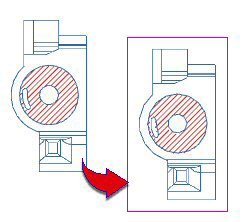
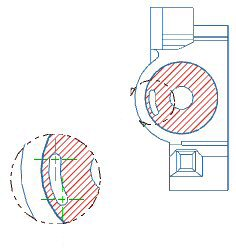

The following enhancements have been made to the Crosshatch and Area Fill commands.
When you copy and paste views created without extracted edges that contain crosshatch or area fill patterns, the patterns now appear in the copied view.

When you create a detail view from a view created without extracted edges that contains a crosshatch or area fill pattern, a portion of the pattern now appears in the detail view.
|
Note |
You must expand the view and add the crosshatch or area fill pattern first, before you create the detail view. |

All annotation types, except target point symbols, intersection symbols, and custom symbols created in NX 7.5 or later, are now supported when you select the Automatically Exclude Annotation option.
|
Application |
Drafting |
|
Toolbar |
Annotation→Crosshatch Annotation→Area Fill |
|
Menu |
Insert→Annotation→Crosshatch Insert→Annotation→Area Fill |